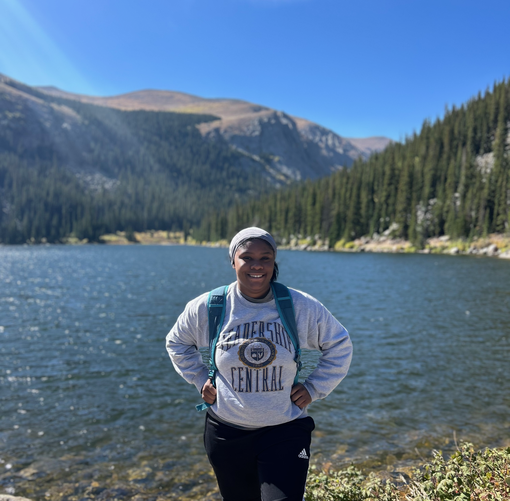

About Me
I am a graduate geography researcher and GIS specialist focused on climate displacement, hazard vulnerability, environmental justice, and spatial analysis. My work combines GIS, LiDAR terrain analysis, hazard mapping, demographic analysis, and geospatial visualization to better understand how environmental risk impacts communities.
My research interests include climate adaptation, disaster risk, hazard mitigation, public health geography, environmental justice, and climate-driven displacement.
Outside of GIS
I enjoy hiking, field exploration, and taking my cat Apollo on walks.

Hazard Gentrification & Environmental Justice

Spatial analysis of historical redlining, demographic change, hazard exposure, and environmental justice patterns across Seattle.
LiDAR-Based Landslide Susceptibility Assessment

LiDAR terrain analysis, DEM classification, slope modeling, and hillshade visualization for landslide susceptibility assessment.
Myawna (Mya) Moore
Denver, Colorado |
myammoore14@gmail.com
| (405) 305-3004
www.linkedin.com/in/myawna-moore
Education
University of Denver
Expected June 2026Denver, CO
Master of Arts in Geography
University of Central Oklahoma
August 2019 - May 2023Edmond, OK
BA Geography, Minor in Marketing
Work Experience
Freelance GIS Work
March 2025 - June 2025Remote
GIS Analyst
- Colorado Sustainability Health and Wellbeing Thesis for Uma Baysal, Phd Student - Data Organization of 5 datasets and integrated them as functioning layers to ArcGIS Online dashboard with Excel to Table geoprocessing.
University of Denver
September 2024 - PresentDenver, CO
Graduate Teaching Assistant
- Instructed two weekly labs of 20+ students
- Presented lab material weekly
- Graded and provided feedback on student assignments with weekly deadlines
- Attended TA meetings and coordinated in a group
Reagan Smith Inc.
May 2023 - August 2024Oklahoma City, OK
GIS Mapping Specialist
- Translated complex land descriptions using Tract Builder to support permitting and compliance.
- Created original plat maps for energy, archaeology, and tribal broadband grant projects.
- Built geodatabases from federal and state TSRs, enhancing data accuracy and access.
- Georeferenced 500+ historical land records for underserved agencies and Native American tribes.
- Designed and executed 30 original plat books sold to the Ponca Tribe of Oklahoma's broadband and energy grant initiatives.
- Performed spatial analysis to identify project locations, improving planning efficiency.
- Mentored GIS interns and developed training resources to support team growth.
- Contributed to archaeological fieldwork, ensuring compliance with cultural resource standards.
Reagan Smith Inc.
May 2022 - August 2022Oklahoma City, OK
GIS Mapping Intern
- Digitized land titles by mapping legal description (township, range).
- Measured boundary lines using surveying equipment.
- Updated client-based web maps on ArcGIS Online to display current data.
Experiences
Graduate Mentor Fellows 2024: Undergraduate Mentor
Leaders of Tomorrow Council 2019-2023: Scholarship Recipient
Geography Student Organization 2021-2023: Secretary and Treasurer
Additional Skills
Teaching and instructing large groups, Microsoft Suites - Sufficient in Excel, IBM SPSS - Statistical Analysis, ESRI ArcGIS - ArcPro, ArcGIS Online, ArcMap, ArcSurvey, Intermediate QGIS, Intermediate SQL coding for database design, Georeferencing and Digitizing, Utilize Tract Building Software, GPS field data processing, Lidar Processing
Certifications
ESRI Managing Lidar Data Using Mosaic Datasets, ESRI Managing Lidar Data Using LAS Datasets, CITI Responsible Conduct of Research Course RCR
 />
/>